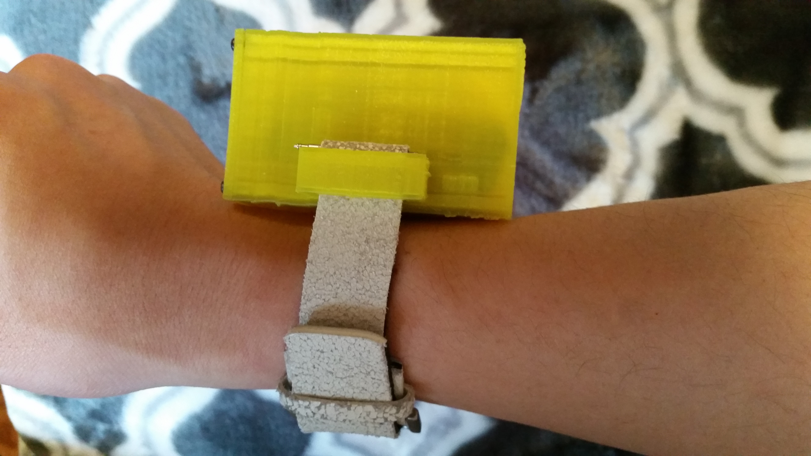
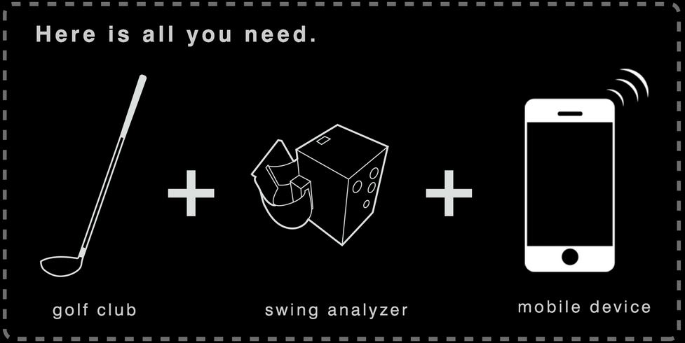
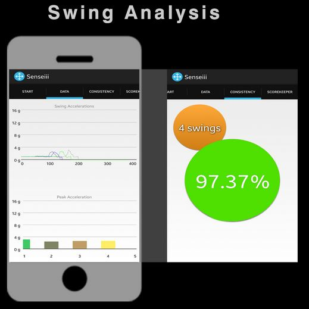
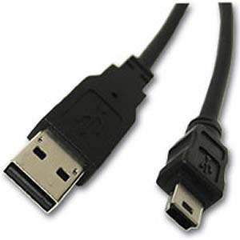
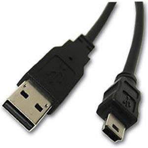
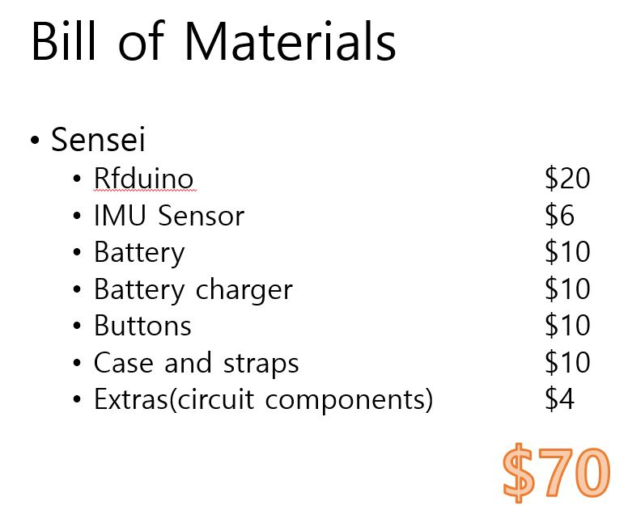

Product Summary
Wearable Device
Sensei is desgined to fit on your wrist. Just simply put on your wrist, and you are all set!
Multisports Supported
Use your sensei for any type of sports! We support consistency feature on hand-based sport and score-keeper in any sports!
What You Need
You only need your phone, sports equiment(or your body), and SENSEI to start your session! Here is the example of golf application.
Two Big Features: Consistency and Score-keeper
Our Sensei supports Two big features, Consistency and Score-keeper. Not only the consistency, you will also be able to see the data of your motion! Your score-keeper is smart enough to know all the sports rules such as duece in tennis.

Swing Analysis
You can check your consistency and data with our analysis tool! Here is how you do. Simply press the start/stop button >>> your phone will make a beep Then start your motion after your phone makes a second beep press the start/stop button again after finishing the motion. >>> your phone will make another beep to indicate the motion is complete Check your phone!
ScoreKeeper
To use our scorekeeper function, simply choose the sports you want to play. Then you can either press the buttons on Sensei or the phone screen if it's attached on your arm. There are two buttons: one for You (the green) and the other for Opponent (Red)
Battery
Your battery can last 30 days in normal usage and 5 days in full on! You can also charge your battery with your computer or wall charger via MiniUSB connection.
 

Cost
Our product is very cheap compared to competitors! Here is the full list of materials we used!
warning
Our product only supports android at this point. User may experience the button failures. Try to turn off both the app and Sensei and try again Sensei is built with very accurate dimension of mechanical housing. Keep our sensei in safe place. Any broken piece in housing can cause button failures or some other unexpected failures Sensei does not support 3d modeling at this point. Our team is still working on it and will update as soon as possible